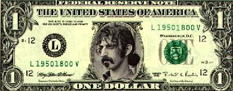
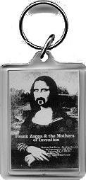
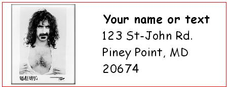
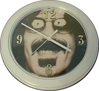

Заппа'zУх!Ой!
русский более или менее регулярный бюллетень для поклонников американского композитора
Frank'а Vincent'а Zappa'ы
Выпуск.35 (22 октября 2001)
Глупости
Был как-то у меня на диске скриптик, завсегдатай электронной барахолки www.ebay.com. Шустрил. Что ни ночь, вставал по будильнику крона и вперед, на электронный привоз, потолкаться там, по сторонам поглядеть, семечки пощелкать.
А заодно и пошерстить странички, которые Search выдает на ключевое слово Zappa. Не шаромыжник и щипач. Perl в кепке. Солидный посетитель, ценитель старины и колониальной экзотики. Чуть только какой-нибудь jpeg или gif'чик в тему накнокает - немедленно за пазуху. Http и Ftp. Бывало по полметра всякого добра к утру домой притаскивал. Любо-дорого посмотреть.
Фотки пластиночных обложек и вкладышей сидюшых. Само собой. Плакаты без числа в масштабе 500 на 300 пикселей. Открытки и значки на фоне дерева и ткани - россыпями. Добра немеряно народ скопил, но день пришел - спешит продать, поскольку женится, например, или запал на Майкла Джексона. Любовь, известно дело, зла.
Все ясно, в общем. Ясно и понятно от косоугольной проекции половины снимков до типографского пуда разрешения особо ценных экземпляров. Прелесть, однако, не в материальном выражении, а в сути. В великом постоянстве антропологических констант. То есть, базар всегда базар, толкучка даже MS IIS-driven остается верна сама себе.

Фанат с горящим взором, надеждой и мечтой, пришел с утра шукать Frank Zappa Songbook, Vol. 1, а у метро его встречает небритый дядька в пиджаке. Он каждый день тут, неизменно. Два ящичка, газетка, а на ней самодельные купюры ручной резки. Неразменны. Плюрибус унум. По три рубля штучка.Кто это такой носатый с пуком волос на затылке, дядька не ведает. Ему сказали, заверили, что на мохнатого бродягу найдется покупатель. Вот и страется. Коль вам не нравится, то, ради Бога, есть еще много разных. Жим Морисон, Миг Жагер, желаете взглянуть?
Прекрасная закладка, подтирка, носовой платок. Подарок маме, папе, другу, кассиру Иванову. Вот только связь с Revised Music For Guitar And Low Budget Orchestra никак не удается усмотреть.
Но не для этого, как говорится, Берлин брали.

За воротами развалы уже десятирублевых сокровищ. Не какие-нибудь одноразовые бумажки. И пиджачок у продавца почище и похмелялся не мочой, а пивом из бутылки. Соответственно, товар солидный. Народный промысел. ООН и ЮНИСЕФ. Сталь, оргстекло. Вещь. Можно повесить ключики для чистого удобства, а, если красоты жаждет душа, эстетики без примеси эргономики, тогда советуют просто к ременной шлице брючек привинтить.Идешь, шагаешь по Москве, любимым образом по гульфику джинсовому стучишь. Красота.
Полиртимией и атональностью не пахнет, зато широк диапазон. Иными словами, выбор безграничен. Вот чай вдвоем - на этой стороне Филипп, на оборотной - дородная супруга. Орел и решка - просто загляденье. Сейчас cпоют, только потри.
А если просто бабу голую без всяких там вокальных причиндалов, пожалуйста, к соседу. Берете двух блондинок на брелках, бесплатно запонки с распахнутой гостеприимно шоколадной писькой.
Но, впрочем, метиз и канцтовры - беспаспортная шелупонь. Чушь. Мелочовка. Даже менты не зарятся.
Другое дело - под навесом. Интеллигенция. Народ с понятием. Частник с моторчиком. Где пять восьмых, где четвертушки, а где всего лишь альт-саксофон нос прочищает, секут за будь здоров.
То есть, мигает сканер, пашет принтер. В мгновенье ока изготовят набор визиток от ста штук до тысячи. Можно с картинкой любимого артистами. Если интересуетесь, на букву Z - вся гамма пан-американского бомонда, включая европейских знаменитостей и мастеров кунг-фу. Недорого.

А в теплом павильоне и вовсе красота. Чисто, уютно, на видном месте сертификаты соответствия и регистрационные свидетельства. Портреты Моцарта, Бетховена, Лужкова, Буша. Сплошная техника и технология.

Ну натурально все для дома, сада и огорода.
Товар с гарантией. И даже с выдумкой. Часики круглые, походят идеально к любому помещению, как к спальне, так и кухне. Омнипрезентны. Сами тикают. Перпетум мобиле.
Корпуса разнообразные, светлых тонов, а циферблаты сменные. При неизменной философии. Любые очки, усы, трусы и титьки идут в переработку. Памелу Андерсон сметают в тот же день, а Джон Бон Джови иногда залеживается. Так что к нему бесплатно батарейка.
Здесь же владельцам дачных домиков, людям с фантазией и тонким эстетическим чутьем, эмалированный прямоугольник с дырочками для шурупов. Всепогоден.
Прекрасно смотрится на всех типах заборов, срубах, щитовых домиках, а также внутри веранд, под собственный огурчик, казенную столичную и песню "Зачем ты в наш колхоз приехал".
Совхозный рынок. Коопторг. Районный рай.
В полном порядке мир скобарей, часовщиков, наборщиков, закройщиц, швей и машинисток. Тип-топ, буль-буль и халли-галли. Размеры сняты, шаблоны неизменны, стандарт всегда один. Оформить, обрезать и обрамить кого угодно могут в две минуты. Наловчились. И никакой принципиальной разницы между поллюцией и революцией. Принцип Паскаля. Закон Гука. One size fits all.
Прекрасно! Жаль только опоздали цеховики и кустари. Единственный, кто мог действительно порадоваться неубиваемой кичуге, пошлятине и чепухе, повеселиться, посмеяться и для почина купить предмет, другой - отсутствует. Фрэнк Винсент Заппа. Лично. Сам.
Нет покупателя, проехали. И 300 мег наследства усопшего скрипта на левой матрице свистят немузыкально. Вот-вот раскрошаться.
Короче, не смешно. Увы!
Искренне Ваш, Владимир Советов
http://www.arf.ru/
| Домой | Заппа'zУх!Ой! | Поиск | Хозяин |